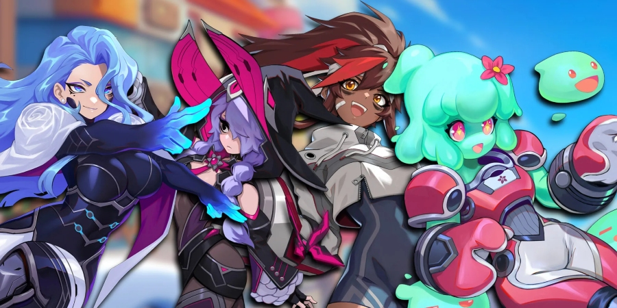

Omega Strikers
Smash opponents off the arena and score goals in lightning-fast 3v3 matches—totally free-to-play. Squad up with friends and choose from a growing cast of colorful Strikers to sling slimes, toss tofu, and rocket boost to victory! Every match in Omega Strikers is different.
weaving in goal-focused objectives, physical fun, and knockouts, and character depth and mastery into thrillingly fast-paced matches. Odyssey Interactive has implemented a variety of new layers of strategy and progression to Omega Strikers in the lead up to launch and will continue to expand the competitive experience through extensive post-launch live service programming.
Each matchup will now play out over three potential rounds and provide players with short breaks to upgrade abilities based on their individual performance in the previous round. A new gameplay features has also been added to augment progression including a tactical Core Flip skill, a special one-use-per-match ability that knocks away opponents and gives you a chance to strike first.